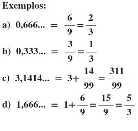
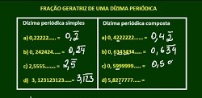

FACILIDADES
Agora você verá os conteúdos em que eu obtive facilidades.
1. SISTEMA DE NUMERAÇÕES
1.1 Sistema decimal, binário, octal e hexadecimal
O que é um Sistema de Numeração?
Um sistema de numeração consiste num conjunto de símbolos usados para representar as
quantidades numéricas. Um sistema que possui dez símbolos para representar todos os números é também
chamado de Sistema de Base Dez. Um sistema que usa dois símbolos, é chamado de Base Dois ou Binário, tambem
possivel
ter base 2, base 8, base 16, base 20, base 60, etc...
Para a área da Informática temos 4 bases que são importantes:
Sistema Decimal (0, 1, 2, 3, 4, 5, 6, 7, 8, 9)
Sistema Binário (0, 1)
Sistema Octal (0, 1, 2, 3, 4, 5, 6, 7)
Sistema Hexadecima (0, 1, 2, 3, 4, 5, 6, 7, 8, 9, A, B, C, D, E, F)
Observe a tabela abaixo, demonstrando um pouco das conversões das 4 bases:
| Decimal |
Binário |
Octal |
Hexadecimal |
| 17 |
10001 |
21 |
F |
| 26 |
11010 |
32 |
1a |
| 43 |
10111 |
53 |
2b |
1.2 Alguns exercícios feitos em sala de aula/tema:
| Exemplo 1. |
Exemplo 2. |
Exemplo 2. |

| 
| 
|
2. DÍZIMA PERIÓDICA
O que é dízima periódica?
Dízimas periódicas são números infinitos e periódicos. Infinitos, pois eles não possuem
fim, e periódicos, pois certas partes deles se repetem, isto é, possuem um período. Além
disso, as dízimas periódicas podem ser representadas na forma fracionária, ou seja, podemos
dizer que elas são números racionais. Se dividirmos o numerador de uma fração pelo denominador
e encontrarmos uma dízima, então essa fração será chamada de fração geratriz. As dízimas podem
ser classificadas como simples e compostas.
1.2 Dízima Periódica SIMPLES e COMPOSTA:
O que é dízima periódica SIMPLES?
A dízimas são chamadas de simples quando apresentam a parte inteira e após a vírgula apenas algarismos
que se repetem. São exemplos de dízimas periódicas simples: 0,34343434... → parte inteira igual a 0 e
período igual a 34.
O que é dízima periódica COMPOSTA?
Uma dízima periódica composta possui parte inteira (que vem antes da vírgula), parte não periódica
e período, que vem depois da vírgula. O que diferencia uma dízima periódica simples de uma composta
é que, na simples, só há o período depois da vírgula; na composta, existe uma parte que não se repete
depois da vírgula.
Exemplos 1 (simples):
1,5888…
1 → parte inteira
5 → parte não periódica
8→ período
32,01656565…
32 → parte inteira
01 → parte não periódica
65 → período
Exemplos 2 (composta):
3,125555... → parte inteira igual a 3, parte não periódica igual a 12 e período igual a 5.
1,7863333... → parte inteira igual a 1, parte não periódica igual a 786 e período igual a 3.
11,2350505050... → parte inteira igual a 11, parte não periódica igual a 23 e período igual a 50.
Exemplo 3 Simples e Composta (equações)
| Exemplo 1. |
Exemplo 2. |
| 
| 
|
RETOMAR PARA A PÁGINA INICIAL